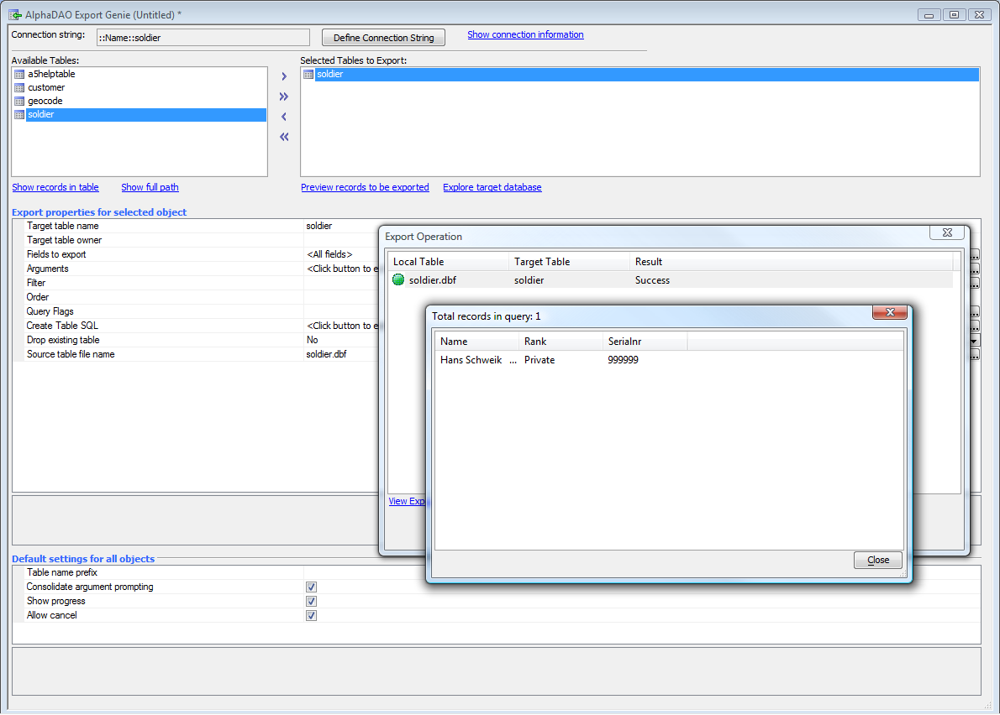

Saving Dialog Contents to a SQL Database
You may not want to save your dialog contents to a DBF database, especially if you are using the dialog in a high-traffic Internet application. Instead, you can email the submitted data or save it to a SQL database. In this example, we'll save it to a SQL database.As before, we must first create an appropriate database. For our example, we'll use Microsoft SQL Server; you can use any SQL database you have available, including Microsoft Access. Since we already have the table structure in Alpha Five, this is a very easy process.
First, go into your SQL database and create a new table. We created a new database named soldier using Microsoft SQL Server Management Studio. Then go to Alpha and create and then run an export operation from the soldier DBF table through a new AlphaDAO connection string (named soldier) to the soldier SQL table.

Now the SQL Server has a table soldier within a database soldier, which we can access through the named connection string soldier.
Note that this process will not create indexes or a primary key. You can add an auto-incremented ID field to the table and make it the primary key if you wish. You can also add indexes for any field or combination of fields. This will not require any of the following code to change, since auto-incremented fields are not included in INSERT statements.
Alternatively, just create the table, primary key, and indexes directly in SQL Server Management Studio or your database design tool of choice. You'll still need to create a connection string in Alpha Five.
The code to handle the afterDialogValidate event is now:
function afterDialogValidate as v (e as p)
'... comments omitted ...
'debug(1)
'Insert a new record into a remote SQL database.
'DIM a connection variable
DIM cn as SQL::Connection
dim flagResult as l
flagResult = cn.open("::Name::soldier")
if flagResult = .f. then
e.javascript="alert('Error, Could not connect to database. Error was: "
e.javascript=e.javascript + cn.CallResult.text + "');"
end
end if
'Specify that we are using Portable SQL syntax
cn.PortableSQLEnabled = .t.
'Dim a SQL arguments object, create arguments and set their values
DIM args as sql::arguments
args.set("NAME",e.dataSubmitted.NAME)
args.set("RANK",e.dataSubmitted.RANK)
args.set("SERIALNR",e.dataSubmitted.SERIALNR)
dim sqlInsertStatement as c
sqlInsertStatement = <<%txt%
INSERT INTO soldier (NAME, RANK, SERIALNR) VALUES (:NAME, :RANK, :SERIALNR)
%txt%
dim flag as l
flag = cn.Execute(sqlInsertStatement,args)
if flag = .f. then
e.javascript="alert('Error, Record was not inserted. Error was: "
e.javascript=e.javascript + cn.CallResult.text + "');"
else
if cn.AffectedRows() = 1 then
e.javascript="');"+e.dataSubmitted.NAME + "alert('Submitted: " + e.dataSubmitted.RANK
e.javascript=e.javascript + "alert('Submitted: " + e.dataSubmitted.SERIALNR + "');"
else
e.javascript=", "
end if
end if
'Now, close the connection
cn.close()
end function